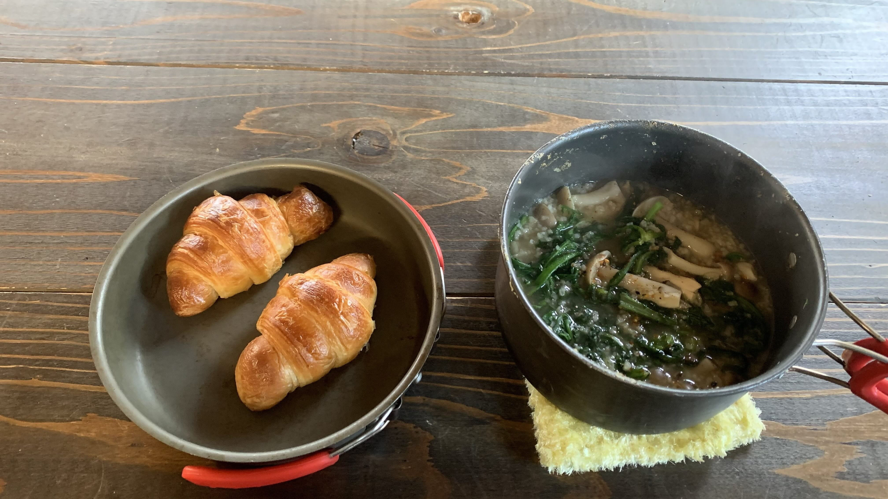
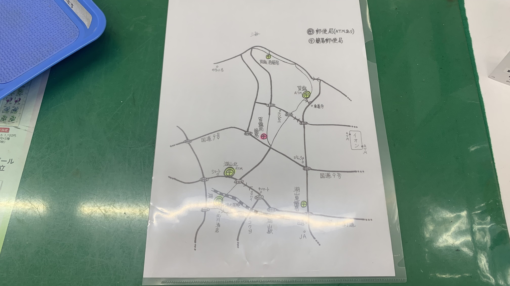
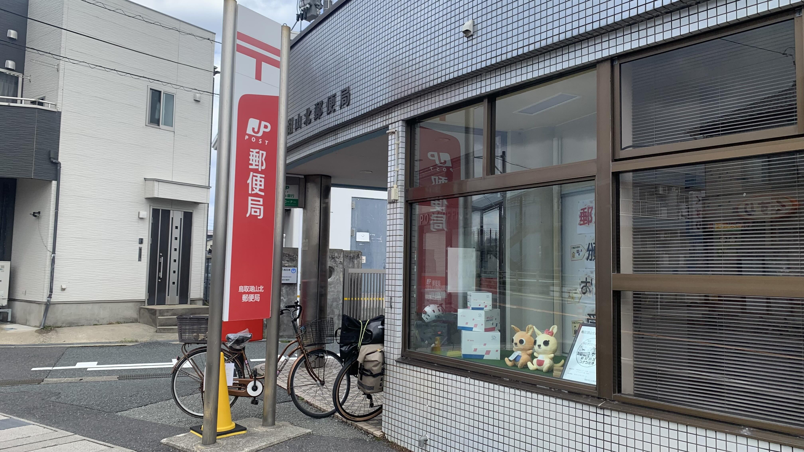
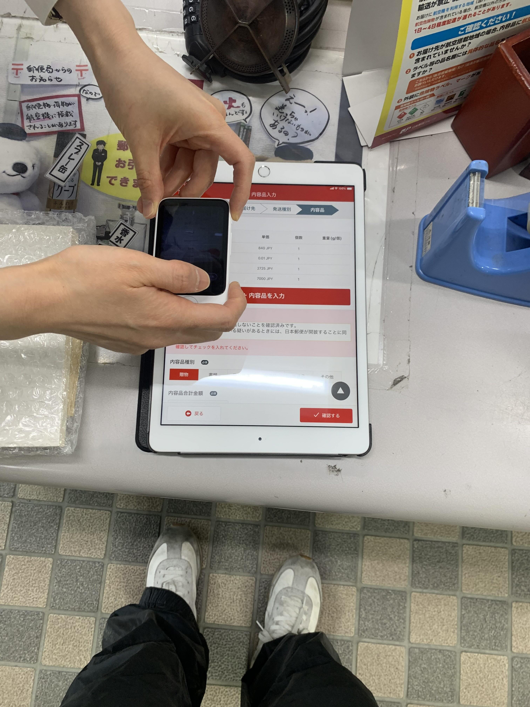
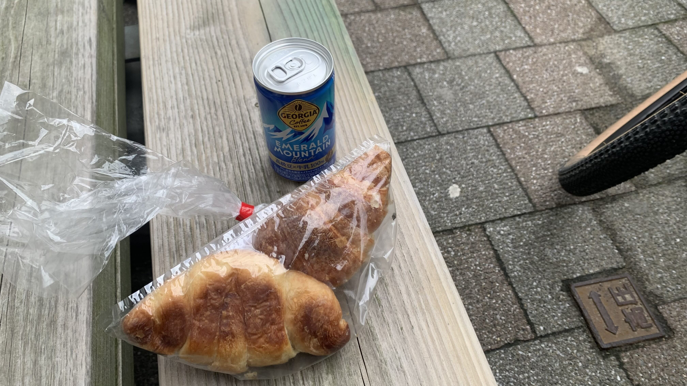
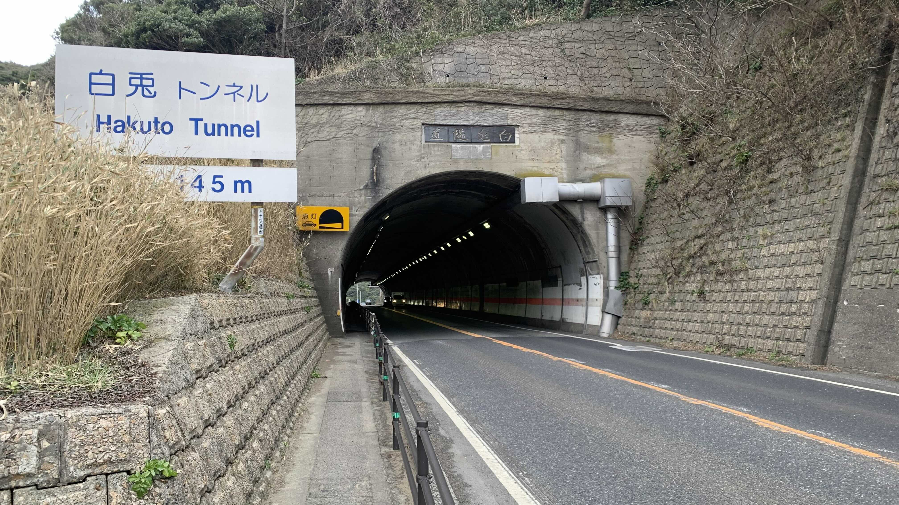
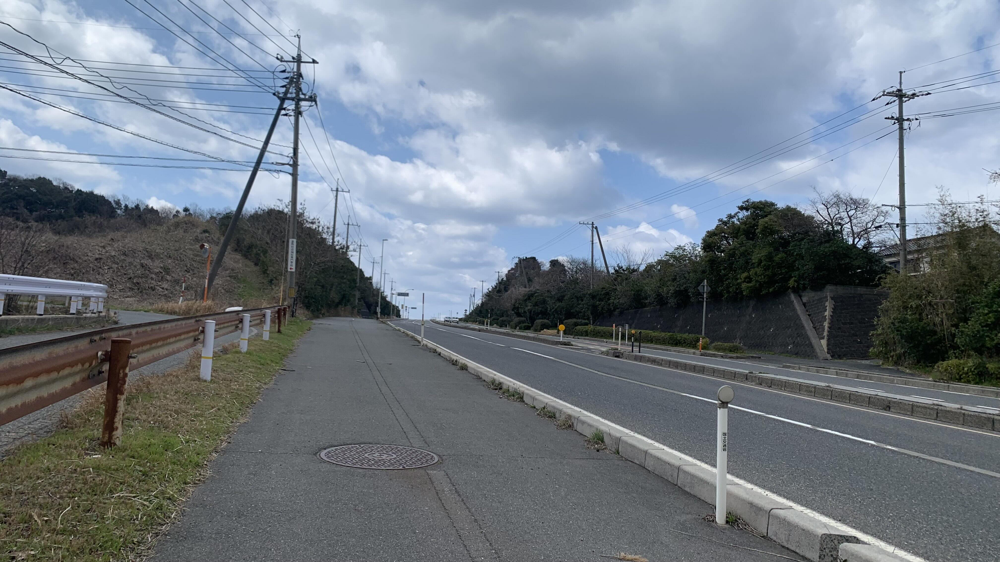
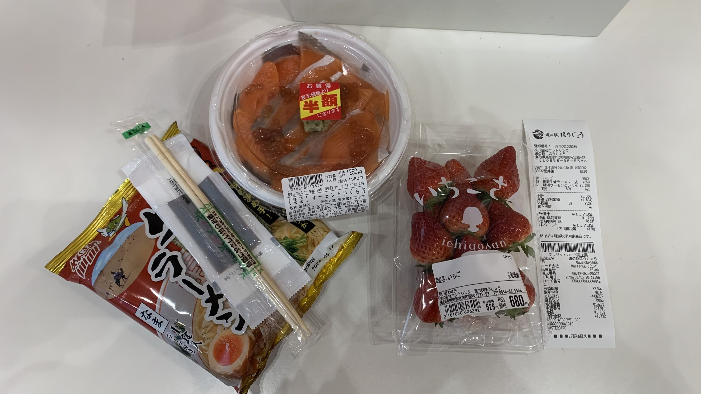

k-Day 006｜坂
人類把自己放置在隔絕自然的房間裡有其道理。
昨天洗完澡直接昏睡。醒來後發現自己維持著睡在睡袋裡的木乃伊姿勢。

早餐把乾燥飯和野菜倒進鍋裡組成炊飯，沒吃完的可頌加熱後吃掉。
出門先往郵局前進，距離民宿最近的是簡易郵便局。詢問後果然不能寄國外包裹。

櫃檯拿出地圖說湖山郵局可以寄喔。

這個地圖是在什麼樣的狀態下準備的呢？也太周到了。

湖山郵便局可以寄送包裹，但是必須線上填寫表格。對於沒有日本地址的我，他們請示了一下櫃檯後方的看起來是長官的人。
如果寄丟的話沒辦法退回來，這樣可以接受嗎？
可以的。（但希望不要寄丟）
現場的人好像都不會說英語，不過手上有個可以即時翻譯的小機器。

不愧是旅遊大國，連這樣的產品都普及了嗎。

離開郵局已經12點了。騎了十公里回到昨天參觀的白兔海岸，買一瓶販賣機咖啡，拿出剩下的可頌當午餐。
一邊吃一邊逛賣場。入口放了一個籠子，裡面住著傳說中的白兔吉祥物，名叫「緣」。

美其名這裡是求緣份的神社，畢竟大國主大神和白兔相遇了，但是你們把它孤身一人關在籠子裡，卻說他能為遊客帶來緣份，實在沒什麼說服力啊。

賣場有一排面對海岸的咖啡座，窗戶貼心地寫上那邊就是傳說中白兔上岸的淤岐島

每個道の駅或地區都有自己的吉祥物，只能說被分到白兔神話真的很吃香，各種周邊看起來都很可愛。
在郵局時問了這些點心可否寄到台灣呢？答案是不行的，必須到現場購買。

離開休息站馬上進入白兔隧道，再見了白兔海浪。
然後就來一個長長的上坡。

其實這兩天爬坡時就一直在想，九鬼周造真是太謙虛了。他在法國的演講說到，西西佛斯可以一直推著石頭上山，再滾下山，這種永恆的反覆正是展現自己意志的機會。這就是武士道的精神。對日本人來說，這是幸福的，所以他不懂為何會有人認為這是苦難。

所以說，這種上上下下的坡，其實不是為了地形所需，而是為了讓生活在此的人從小開始，在日常中就磨練自己的身體與意志嗎？

效果似乎不錯。不確定日本人聽了會怎麼想就是了。

就這樣，在反覆的上坡與下坡之間，回憶著那篇演說稿的內容。

突然看到這個小小的沙灘。坐下來想把最後一顆可頌吃掉。咬了一口還是太冷了，就繼續騎吧。

這裡似乎是龍見台。

這裡叫魚見台，不知道魚在哪裡。不過看著白色海浪一波波往岸上吹，卻沒有兔子奔跑跳躍的樣子了。

下午四點半左右抵達今天的道之驛，是柯南主題。
這廁所，配得上窗明几淨。

趕在關門前抵達，又找到半額食品。超·好·吃！

這個休息站暖氣很足，到半夜也沒有關。

在走廊盡頭的桌子整理日誌。還是無法上傳
算了，到下一個旅店再做打算吧！
晚上十點多到露營區搭好帳篷，突然肚子一陣飢餓。

把剩下的鬼太郎薯片全都吃光，草莓一顆一顆吞下。
今日花費： 郵局寄物 1100、咖啡 160、晚餐 1732